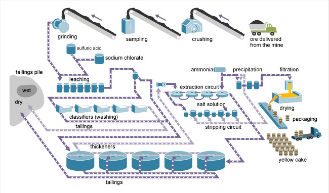

Nuclear Energy
Nuclear energy comes from the nucleus of atoms. The energy is released by nuclear fusion (nuclei are fused together) or nuclear fission (nuclei are split apart). Nuclear plants use nuclear fission of a radioactive element called uranium to generate electricity.
Nuclear Power Plants
As of January 2018, there were 99 operating nuclear reactors at 61 nuclear power plants in 30 states. Thirty-six of the plants have 2 or more reactors. Nuclear power has supplied about one-fifth of total annual U.S. electricity since 1990. Of the 31 countries in the world with commercial nuclear power plants in 2015, the United States had the most nuclear electricity generation capacity and generated more electricity from nuclear energy than any other country.
The Nuclear Fuel Cycle
- Exploration
- Uranium mining
- Uranium milling
- Uranium conversion
- Uranium enrichment
- Uranium reconversion and nuclear fuel fabrication
Where Our Uranium Comes From
Uranium is the fuel most widely used by nuclear power plants for nuclear fission. In nuclear fission, energy is released when atoms are split apart to form smaller atoms. Nuclear power plants use the heat from nuclear fission to produce electricity.

U.S. Nuclear Industry
lectricity generation from commercial nuclear power plants in the United States began in the late 1950s. As of the end of December 2017, the United States had 99 operating commercial nuclear reactors at 61 nuclear power plants in 30 states. The average age of these nuclear reactors is about 37 years old. The oldest operating reactors, Nine Mile Point Unit 1 and Oyster Creek, began commercial operation in December 1969. The newest reactor to enter service, Watts Bar Unit 2, came online in 2016, the first reactor to come online since 1996 when the Watts Bar Unit 1 came online. Twenty shut down power reactors at 18 sites are being decommissioned.
Nuclear Power and the Environment
An uncontrolled nuclear reaction in a nuclear reactor could result in widespread contamination of air and water. The risk of this happening at nuclear power plants in the United States is small because of the diverse and redundant barriers and safety systems in place at nuclear power plants, the training and skills of the reactor operators, testing and maintenance activities, and the regulatory requirements and oversight of the U.S. Nuclear Regulatory Commission.